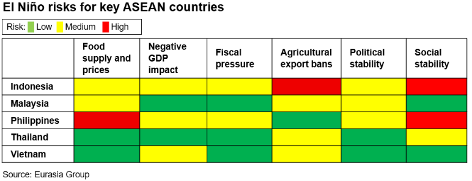
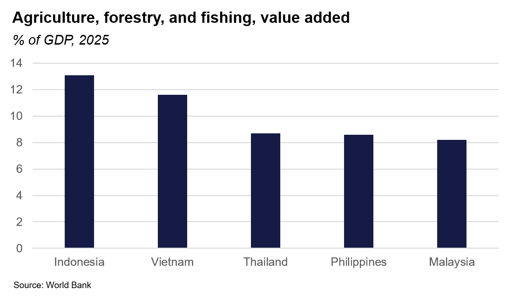
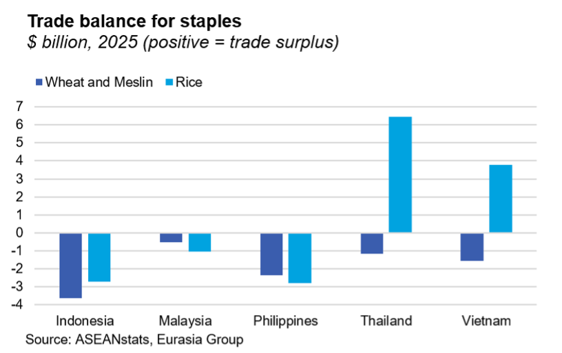
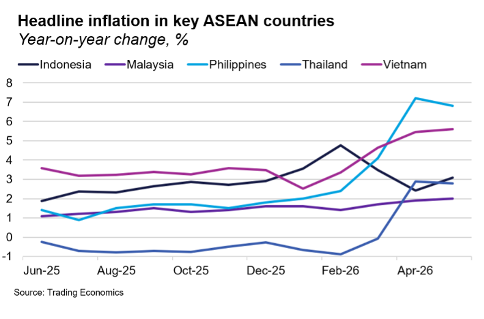
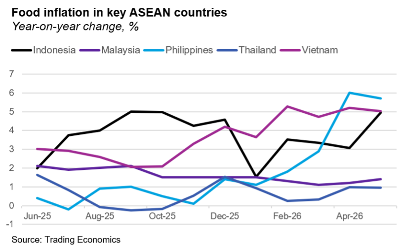

|
 |
|||
|
||||
|
||
ASEAN economies are among the most exposed to El Niño. Some climate models predict a “super El Niño” event that could be among the strongest since 1950, bringing much hotter weather and below-average rainfall (see Bad policy could make El Niño's trillion-dollar tab worse, 19 June 2026). El Niño conditions in Southeast Asia are expected to strengthen from July to September and remain elevated through year-end, with probable lingering effects into early 2027. In addition, the ASEAN Specialised Meteorological Centre predicts that a “positive Indian Ocean Dipole,” which typically causes drier-than-usual conditions, will develop between July and August; this will mainly affect Indonesia, Malaysia, and Singapore.   El Niño will disrupt key global agricultural supplies as drought reduces output. ASEAN is a major supplier of rice, palm oil, and robusta coffee, making global markets particularly vulnerable to production losses in the region. Indonesia and Malaysia, which produce nearly 85% of the world's palm oil exports, have warned of lower output this year. Thailand and Vietnam, the second- and third-largest rice exporters, have flagged risks of smaller rice crops as dry conditions coincide with key planting and growth stages. Vietnam and Indonesia, which account for over 40% of global robusta exports, are expected to have weaker fourth-quarter coffee harvests. Governments are unlikely to impose export restrictions absent extreme shortages. Indonesia remains the likeliest exception, given its increasingly interventionist commodity policies and a biodiesel mandate that is already diverting more palm oil to the domestic market. Indonesia temporarily banned palm oil exports in 2022 to secure domestic supplies. Other countries have imposed more limited agricultural export controls in the past. Thailand tightened crude palm oil export rules during the recent energy crisis; Malaysia and Vietnam curbed poultry and rice exports, respectively, in response to pandemic-related shortages. Meanwhile, lower rainfall could constrain hydropower generation. Hydropower accounts for a notable share of the power mix in several ASEAN countries, particularly Vietnam, potentially prolonging the increased reliance on coal seen during the recent energy crisis. Shortages of coal are a watchpoint in Indonesia, with a risk that Jakarta makes less available for export. Higher food prices will exacerbate inflation the most in the Philippines and Indonesia. Easing geopolitical tensions following the Iran deal—Eurasia Group’s basecase remains a shaky deal—have reduced the risk of a dual inflation shock from high oil prices and El Niño for now (though oil prices recently partially rebounded amid renewed geopolitical tensions). However, the Philippines and Indonesia are particularly exposed as large net food importers (the former is the world’s largest rice importer). Higher regional prices for staple commodities will increase import costs and compound domestic inflationary pressures. Lower-income households will be especially vulnerable given the outsized importance of rice in their consumption baskets.  To help manage prices, the Philippines, Indonesia, and (to a lesser extent) Malaysia will likely expand food imports and draw down stockpiles. Jakarta and Putrajaya are also likely to limit the pass-through of higher prices for key staples—particularly rice—through price stabilization measures, though this will increase fiscal costs. They will probably allow other food prices to rise with market demand. Thailand and Vietnam, meanwhile, are relatively insulated by stronger domestic production, although drought-driven supply disruptions will still push up domestic food prices.   Indonesia and the Philippines face fiscal strains as subsidies expand. Both countries will likely increase subsidies, food price stabilization measures, drought relief, and social assistance to mitigate cost-of-living impacts. The fiscal balancing act will be especially tough for Indonesia, which already faces pressure from higher energy subsidies, although lower oil prices have eased some of the near-term strain. The weak rupiah will amplify price increases for imported food, increasing pressure on the administration to contain living costs. However, the fiscal impact of El Niño will likely remain considerably smaller than the subsidy burden from elevated oil prices in recent months and is unlikely to alter the government's commitment to the 3%-of-GDP deficit cap. In the Philippines, additional food support would add to an already sizeable deficit, limiting budget flexibility. Thailand and Malaysia are likely to introduce farmer support measures, but the fiscal impact should be modest. Political risks will remain limited, although some protests over rising food prices are likely. Indonesia could face renewed demonstrations over living costs and economic management as some food prices rise. In the Philippines, rice inflation has previously sparked public backlash. President Ferdinand Marcos’s approval ratings could drop further, making him a lame duck well before he leaves office in June 2028. In Malaysia, the lingering effects of El Niño could hurt the ruling coalition’s popularity ahead of general elections expected next year. In Thailand, pressure will more likely come from drought-affected farmers than from broader unrest. |